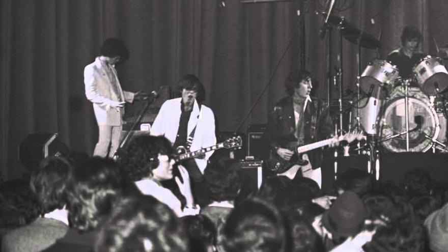

La musica en España tiene muchos años de historia, pero no seria a partir del año 74, la muerte del dictador Francisco Franco, que no empezaria mostrar su potencial. Desde La Movida Madrileña hasta el Rock Radical Vasco.

Movida Madrileña

La musica en España tiene muchos años de historia, pero no seria a partir del año 74, la muerte del dictador Francisco Franco, que no empezaria mostrar su potencial. Desde La Movida Madrileña hasta el Rock Radical Vasco.
La Movida Madrileña fue un movimiento contra-cultural surgido en España tras la dictadura franquista, todo empezaria con el concierto homenaje a Canito en el febrero de 1980
